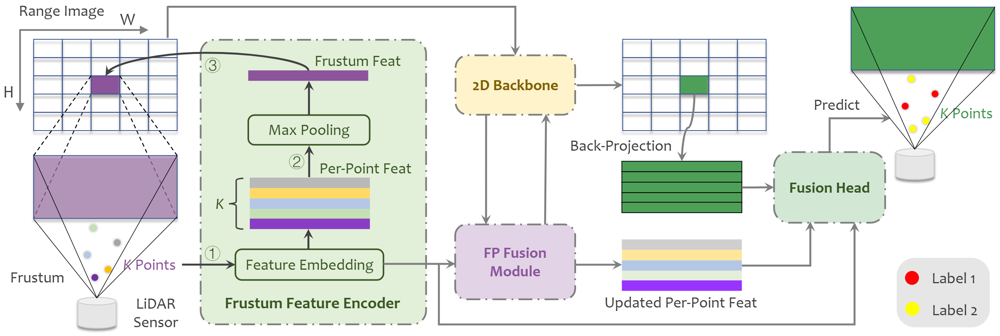

FRNet: Frustum-Range Networks for Scalable LiDAR Segmentation
- 1Nanjing University of Aeronautics and Astronautics
- 2National University of Singapore
- 3Nanjing University of Posts and Telecommunications
Abstract
LiDAR segmentation has become a crucial component in advanced autonomous driving systems.
Recent range-view LiDAR segmentation approaches show promise for real-time processing.
However, they inevitably suffer from corrupted contextual information and rely heavily on post-processing techniques for prediction refinement.
In this work, we propose FRNet, a simple yet powerful method aimed at restoring the contextual information of range image pixels using corresponding frustum LiDAR points.
Firstly, a frustum feature encoder module is used to extract per-point features within the frustum region, which preserves scene consistency and is crucial for point-level predictions.
Next, a frustum-point fusion module is introduced to update per-point features hierarchically, enabling each point to extract more surrounding information via the frustum features.
Finally, a head fusion module is used to fuse features at different levels for final semantic prediction.
Extensive experiments conducted on four popular LiDAR segmentation benchmarks under various task setups demonstrate the superiority of FRNet.
Notably, FRNet achieves 73.3% and 82.5% mIoU scores on the testing sets of SemanticKITTI and nuScenes.
While achieving competitive performance, FRNet operates 5 times faster than state-of-the-art approaches.
Such high efficiency opens up new possibilities for more scalable LiDAR segmentation.
The code has been made publicly available at https://github.com/Xiangxu-0103/FRNet.
Resource

HighLight
 Figure 1. A study on the scalability of state-of-the-art LiDAR segmentation models on the SemanticKITTI leaderboard.
The size of the circular representation corresponds to the number of model parameters.
FRNet achieves competitive performance with current state-of-the-art models while still maintaining satisfactory efficiency for real-time processing.
Figure 1. A study on the scalability of state-of-the-art LiDAR segmentation models on the SemanticKITTI leaderboard.
The size of the circular representation corresponds to the number of model parameters.
FRNet achieves competitive performance with current state-of-the-art models while still maintaining satisfactory efficiency for real-time processing.
Frustum-Range Representation Learning
In this work, we present a Frustum-Range Network (FRNet) for scalable LiDAR segmentation, which incorporates points into the range image, achieving a superior balance between efficiency and accuracy. FRNet consists of three main components. Firstly, a Frustum Feature Encoder (FFE) is utilized to group all points with the same frustum region into corresponding range-view pixels in relation to the range image using multiple multi-layer perceptrons (MLPs). This allows for the preservation of all points and the prediction of semantic labels for these points in an end-to-end manner. Subsequently, the point features are pooled to represent the frustum region and formatted into a 2D representation, which is then subjected to traditional convolutions. Secondly, a Frustum-Point (FP) fusion module is employed to efficiently update the hierarchical features of each point during each convolutional stage. This module includes frustum-to-point fusion to update per-point features and point-to-frustum fusion to enhance frustum features. As a result, all points extract larger local features based on the frustum region. Finallg, a Fusion Head (FH) module is designed to leverage features from different levels to generate individual features for each point, facilitating end-to-end prediction without the need for post-processing techniques. As shown in Fig. 1, the proposed FRNet achieves great improvement among range-view methods while still maintaining high efficiency.
In this work, we present a Frustum-Range Network (FRNet) for scalable LiDAR segmentation, which incorporates points into the range image, achieving a superior balance between efficiency and accuracy. FRNet consists of three main components. Firstly, a Frustum Feature Encoder (FFE) is utilized to group all points with the same frustum region into corresponding range-view pixels in relation to the range image using multiple multi-layer perceptrons (MLPs). This allows for the preservation of all points and the prediction of semantic labels for these points in an end-to-end manner. Subsequently, the point features are pooled to represent the frustum region and formatted into a 2D representation, which is then subjected to traditional convolutions. Secondly, a Frustum-Point (FP) fusion module is employed to efficiently update the hierarchical features of each point during each convolutional stage. This module includes frustum-to-point fusion to update per-point features and point-to-frustum fusion to enhance frustum features. As a result, all points extract larger local features based on the frustum region. Finallg, a Fusion Head (FH) module is designed to leverage features from different levels to generate individual features for each point, facilitating end-to-end prediction without the need for post-processing techniques. As shown in Fig. 1, the proposed FRNet achieves great improvement among range-view methods while still maintaining high efficiency.

Figure 2. The proposed FRNet comprises three main components:
1) Frustum Feature Encoder is used to embed per-point features within the frustum region.
2) Frustum-Point (FP) Fusion Module updates per-point features hierarchically at each stage of the 2D backbone.
3) Fusion Head fuses different levels of features to predict final results.
 Figure 3. Qualitative results among state-of-the-art LiDAR segmentation methods on the val set of SemanticKITTI.
To highlight the differences compared with groundtruth, the correct and incorrect predictions are painted in gray and red, respectively.
Best viewed in colors and zoomed-in for details.
Figure 3. Qualitative results among state-of-the-art LiDAR segmentation methods on the val set of SemanticKITTI.
To highlight the differences compared with groundtruth, the correct and incorrect predictions are painted in gray and red, respectively.
Best viewed in colors and zoomed-in for details.
BibteX
@article{xu2025frnet,
title = {FRNet: Frustum-Range Networks for Scalable LiDAR Segmentation},
author = {Xu, Xiang and Kong, Lingdong and Shuai, Hui and Liu, Qingshan},
journal = {IEEE Transactions on Image Processing},
volume = {34},
pages = {2173--2186},
year = {2025}
}